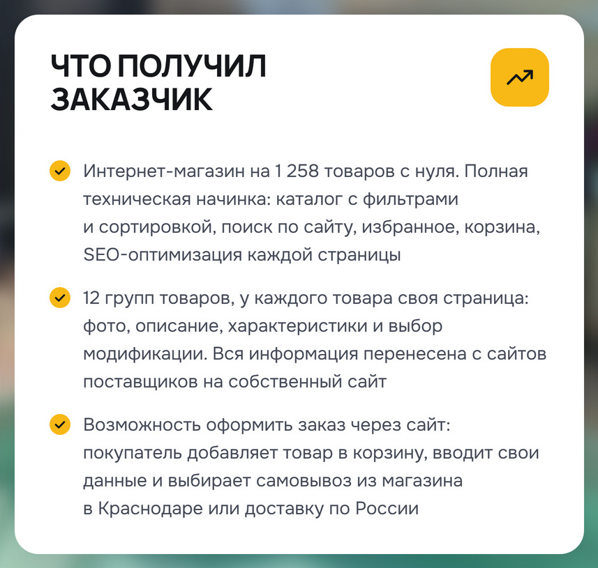
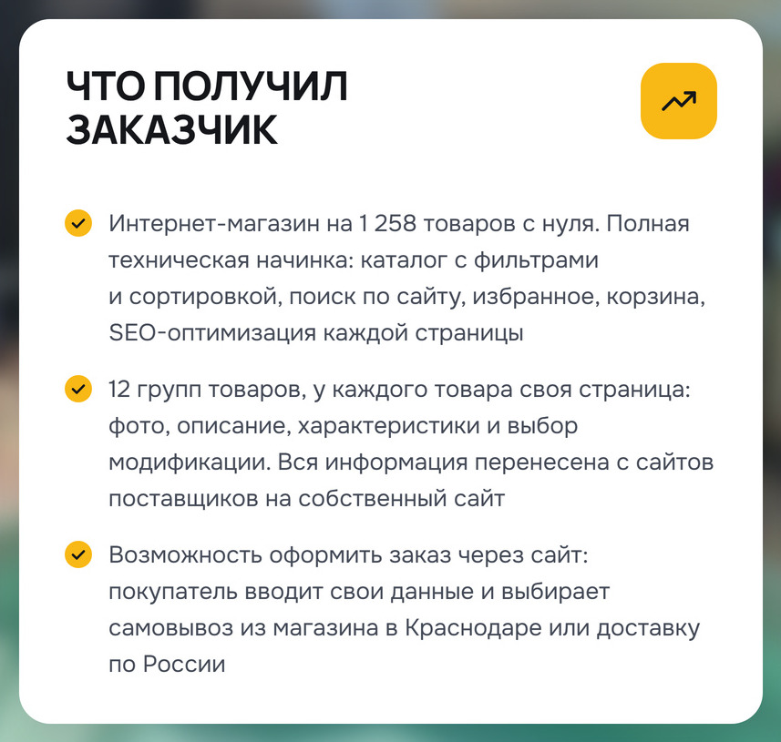

Кадр 2, «Что получил заказчик» — третий пункт
СталоВозможность оформить заказ через сайт: покупатель добавляет товар в корзину, вводит свои данные и выбирает самовывоз из магазина в Краснодаре или доставку по России
БылоВозможность оформить заказ через сайт: покупатель вводит свои данные и выбирает самовывоз из магазина в Краснодаре или доставку по России
Вставил твоими словами. Хвост пункта — «…и выбирает самовывоз…» — и двоеточие после «через сайт» оставил как были: ты сказал «дальше как ты и писал».
СталоПравая карточка кадра 2
БылоПравая карточка кадра 2
Пункт как занимал четыре строки, так и занимает: раньше на четвёртой стояло одно «по России», теперь строки заполнены ровнее. Кегль и раскладка кадра прежние, «Боль» и пункты 1–2 не сдвинулись — вне третьего пункта кадр совпадает с тем, что ты смотрел.
Кадр 2 целиком — каким он пойдёт в кабинет

Что не менялось и что проверено
Обложка и кадры 3–7 — те же файлы байт в байт. Альбом 19 целиком — все семь кадров подряд, все 19 альбомов — общая страница.
Проверено: гейты альбома зелёные (поля кадров, пилюли, ползунки, кромка, углы, экран обложки, размытие фона, слова); распознавание текста на кадре 2 контактов не нашло; текст кадра лёг без висячих предлогов и разрывов слов; отступ под третьим пунктом до края карточки — 45, как был, над заголовком — 48.